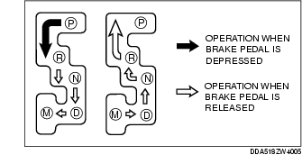
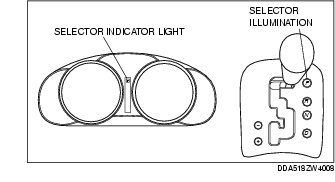

Selector lever inspection (sport AT)
1. Turn the ignition switch to the ON position (engine OFF).
2. With the brake pedal depressed, verify that there is a "click" at each range when shifted.

3. Verify that the selector lever can be shifted.
4. Verify that there is a "click" at each position when shifted from P position to M range.
5. Verify that the positions of the selector lever and the indicator are aligned.

- • If there is any malfunction, adjust the TR switch. (See TRANSAXLE RANGE (TR) SWITCH ADJUSTMENT [FN4A-EL].)
6. Verify that the vehicle operates in each selected range.